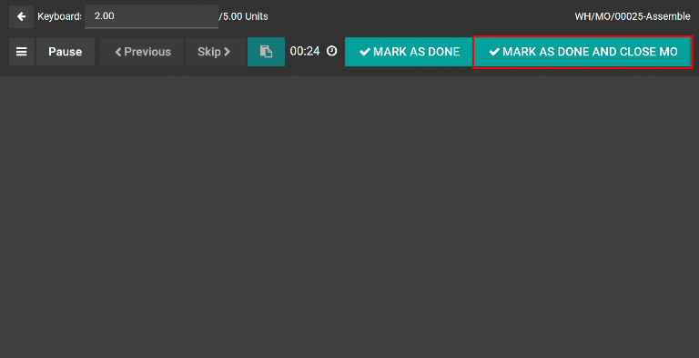

Fabricar órdenes parciales¶
En algunos casos, no es posible producir la cantidad total de una orden de fabricación de forma inmediata. Cuando esto ocurre, la aplicación Fabricación de Odoo permite fabricar una parte del pedido y crea una orden parcial para la cantidad restante.
Cuando crea una orden parcial en la aplicación Fabricación, la orden de fabricación original se divide en dos. La etiqueta de referencia para cada orden es la que se utiliza en la orden original, seguida de un guion y un número adicional para indicar que se trata de una orden parcial.
Example
Una empresa crea una orden de fabricación con la etiqueta de referencia WH/MO/00175 para 10 unidades del producto X. Después de comenzar a trabajar en la orden de fabricación, el empleado que trabaja en la línea de producción se da cuenta de que solo hay suficientes componentes en sus existencias para producir cinco unidades del producto.
En lugar de esperar las existencias adicionales de los componentes, fabrica cinco unidades y crea una orden parcial para los cinco productos restantes. Esto divide la orden de fabricación en dos órdenes separadas, WH/MO/00175-001 y WH/MO/00175-002.
La orden 001 incluye las cinco unidades fabricadas y se marca inmediatamente como Hecha. La orden 002 incluye las cinco unidades que todavía deben fabricarse y está marcada como En progreso. Una vez que los componentes restantes están disponibles, el empleado vuelve a la orden 002 y fabrica las unidades restantes antes de cerrar la orden.
Crear una orden parcial de fabricación¶
Para crear una orden parcial para una parte de una orden de fabricación, vaya a . Seleccione una orden de fabricación con una cantidad de dos o más o haga clic en Nuevo para crear una.
Si está creando una nueva orden de fabricación, seleccione un producto en el menú desplegable e ingrese una cantidad de dos o más en el campo correspondiente. Por último, confirme la orden.
Después de fabricar la cantidad que se está produciendo de forma inmediata, ingrese ese número en el campo cantidad en la parte superior de la orden de fabricación.

Después, haga clic en Validar y aparecerá una ventana emergente con el mensaje Produjo menos que la demanda inicial, desde allí puede crear una orden parcial. Haga clic en Crear orden parcial para dividir la orden de fabricación en dos órdenes separadas con las etiquetas de referencia WH/MO/XXXXX-001 y WH/MO/XXXXX-002.

La orden 001 incluye los artículos que se fabricaron y se cierra de inmediato, mientras que la orden 002 es la orden parcial que incluye los artículos que aún no se han fabricado, además permanece abierta que pueda completarse después.
Una vez que pueda fabricar las unidades restantes, aya a y seleccione la orden parcial de fabricación. Si todas las unidades restantes se fabrican de inmediato, solo haga clic en Validar para cerrar la orden.
Si solo algunas de las unidades restantes se fabrican en ese momento, cree otra orden parcial para las otras. Debe seguir los pasos detallados en esta sección.
Crear una orden parcial desde la vista de tableta¶
También puede crear ordenes parciales de fabricación desde la vista de tableta de la orden de trabajo.
Nota
Para utilizar la vista de tableta, el ajuste Órdenes de trabajo debe estar habilitado. Vaya a y allí seleccione la casilla junto a Órdenes de trabajo, luego guarde los cambios. Esto hace que la pestaña Órdenes de trabajo aparezca en las órdenes de fabricación, desde la cual se puede abrir la vista de tableta.

Para crear una orden parcial desde la vista de tableta, vaya a . Seleccione una orden de fabricación con una cantidad de dos o más o haga clic en Nuevo para crear una.
Si está creando una nueva orden de fabricación, seleccione un producto en el menú desplegable e ingrese una cantidad de dos o más en el campo correspondiente. Por último, confirme la orden.
Despu√©s de confirmar la orden de fabricaci√≥n, seleccione la pesta√±a √ìrdenes de trabajo y haga clic en el bot√≥n üì± (vista de tableta) ubicado en la l√≠nea de la primera orden de trabajo para acceder a la vista de tableta.

Una vez que se encuentre en la vista de la tableta, ingrese la cantidad a fabricar de forma inmediata en el campo Unidades que se ubica en la parte superior izquierda.

Los pasos para el resto del flujo de trabajo dependen de si la orden de fabricación que se procesa requiere que termine una sola orden de trabajo o varias.
Una sola orden de trabajo¶
Si la orden de fabricación requiere que termine una sola orden de trabajo, complétela y luego haga clic en Marcar como hecho y cerrar orden de fabricación. La orden de fabricación se cierra y de forma automática se crea una orden parcial para las unidades que restan por fabricar.
Una vez que pueda fabricar las unidades restantes, vaya a y seleccione la orden de fabricación parcial. Su nombre incluye la etiqueta de referencia de la orden parcial original con 002 al final.
En la orden de fabricaci√≥n parcial, seleccione la pesta√±a √ìrdenes de trabajo y haga clic en el bot√≥n üì± (vista de tableta) que está ubicado en la l√≠nea de la orden de trabajo. Si todas la unidades de la orden parcial se van a completar inmediatamente, solo haga clic en Marcar como completado y cerrar orden de fabricaci√≥n despu√©s de completar la orden de fabricaci√≥n.
Si solo algunas de las unidades se fabricarán de manera inmediata, escriba el número en el campo Unidades del lado superior izquierdo en la vista de tableta y luego haga clic en Marcar como completado y cerrar la orden de fabricación para crear otra orden parcial para las unidades restantes. La nueva orden parcial se puede procesar con las instrucciones dadas en esta sección.
Varias órdenes de trabajo¶
Si la orden de fabricación requiere que se completen varias órdenes de trabajo, finalice la primera orden de trabajo y luego haga clic en Registrar producción. Esto dividirá la orden de fabricación en dos órdenes llamadas WH/MO/XXXXX-001 y WH/MO/XXXXX-002, con XXXXX refiriéndose al número original de la orden.
De manera predeterminada, la vista de tableta muestra la primera orden de trabajo para la orden de fabricación 002. Puesto que esta orden de fabricación no se completará de manera inmediata, salga de la vista de tableta haciendo clic dos veces en el botón ⬅️ (regresar). De esta manera, ira a la orden 001.
Para finalizar la orden 001, seleccione la pestaña Órdenes de trabajo y haga clic en el botón de vista de tableta ubicado en la línea junto a la orden de trabajo. Finalmente, complete las órdenes de trabajo restantes y haga clic en Marcar como completado y cerrar la orden de fabricación para cerrar la orden de fabricación.
Un vez que las unidades restantes estén listas para fabricarse, vaya a , luego seleccione la orden 002. Seleccione la pestaña Órdenes de trabajo y haga clic en el botón de vista de tableta ubicado en la línea de la primera orden de trabajo.
Si todas las unidades de la orden parcial se completarán inmediatamente, solo haga clic en Marcar como completado y cerrar la orden de fabricación después de que finalicen todas las órdenes de trabajo.
Si solo algunas de las unidades restantes se fabricaran inmediatamente, escriba el número del campo Unidades ubicado en la parte superior izquierda en la vista de tableta y luego haga clic en Registrar producción para crear una orden parcial adicional para las unidades restantes. Aparecerá con un 003 al final de su etiqueta de referencia.
Las órdenes parciales 002 y 003 se pueden completar siguiendo los pasos descritos en esta sección.
Truco
También puede crear una orden parcial en medio de una orden de fabricación cuando algunas de las órdenes de trabajo ya se han completado. Al hacerlo, las órdenes de trabajo se marcarán como Completadas en la orden parcial.
Example
Una orden de fabricación para cuatro sillas requiere que se completen dos órdenes de trabajo: Pintura y Ensamblaje. Mientras que la orden para pintar se puede completar inmediatamente para las cuatro sillas, no hay suficientes tornillos para ensamblar dos.
Por ello, el empleado responsable de producir las sillas comienza pintando todas y marcando la orden de trabajo de Pintura como Completada para todas. Después, pasan a la orden de trabajo de Ensamblaje. Se pueden ensamblar solo dos de las cuatro sillas, por lo que deberá escribir dos en el campo Unidades en la vista de tableta y hacer clic en Registrar producción.
Se creará una orden parcial de fabricación para las dos sillas restantes. En dicha orden parcial, la orden de trabajo de Pintura ya estará marcada como Completada y solo faltará completar la orden de trabajo de Ensamblaje.
Una vez que tenga mas tornillos disponibles, los empelados de fabricación terminarán de ensamblar las sillas restantes y tendrán que hacer clic en Marcar como completado y cerrar orden de fabricación para completar la orden de trabajo de Ensamblaje y así cerrar la orden parcial de fabricación.